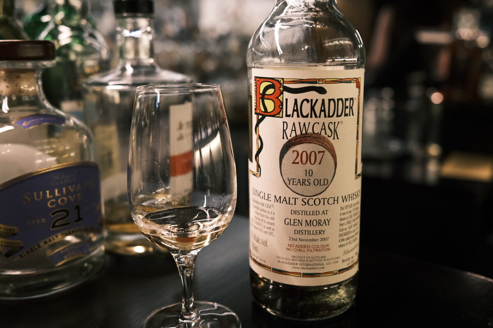

Glen Moray 2007 Blackadder 10 years 57.6% (hogshead)
Raw cask, so mind the bits. Hogshead 5688.
Colour Light straw. Almost clear!
Nose Tropical: coconut, mango, banana. Caramel. Lemongrass and peppermint tea. Quite spicy! Both cloves and alcoholic burn. Creamy oak. A pinch of sugar. Really clean. Lovely. With water, cream.
Palate Royales. Marshmallow, a touch of fruit jam, some shortbread. Fresh berries and lemon juice, perhaps lemon cheesecake? Malt. With water, sugar cookies. Raisin cookies.
Finish Floral. Caramel. Malty. A whack of tropical fruit and roasted hazelnuts. Long and hot. Coconut and vanilla. With water, a bit stemmy.
Comments Lovely distillate forward character. 86/100.

Posted by Dominic on 14 Jun 2021